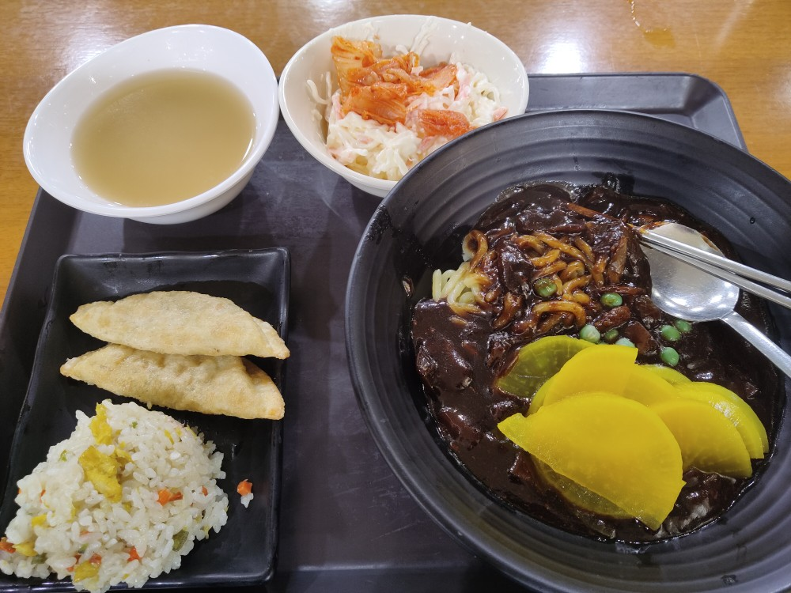
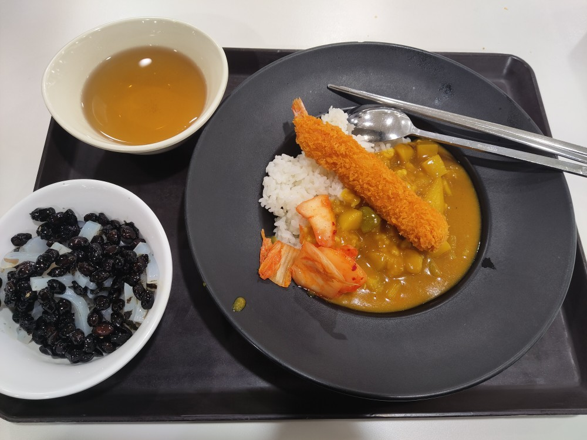
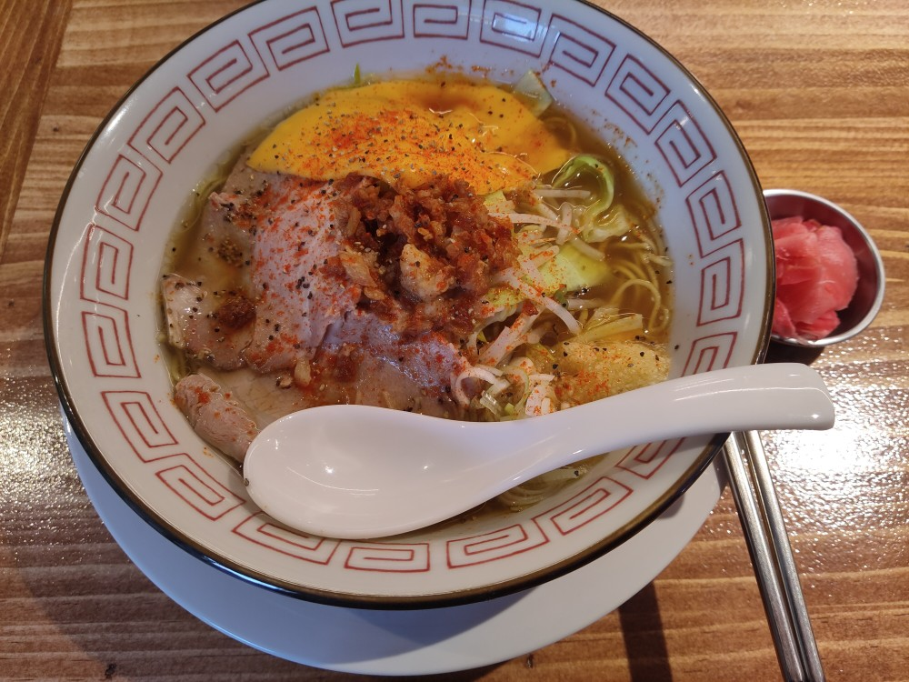
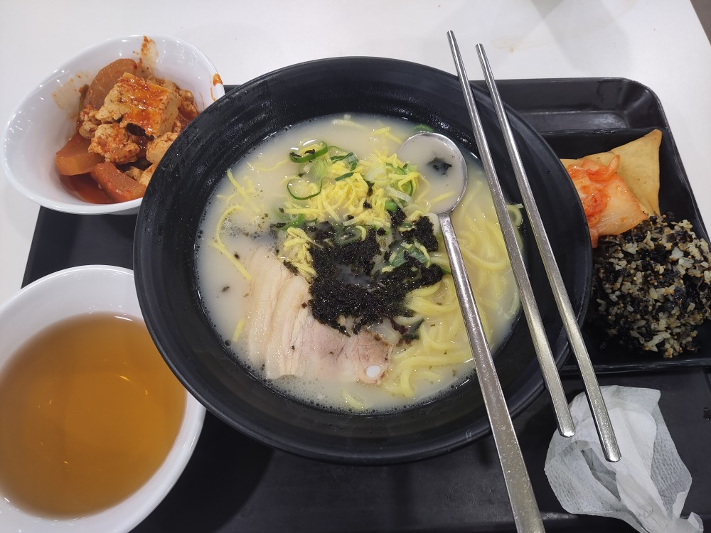
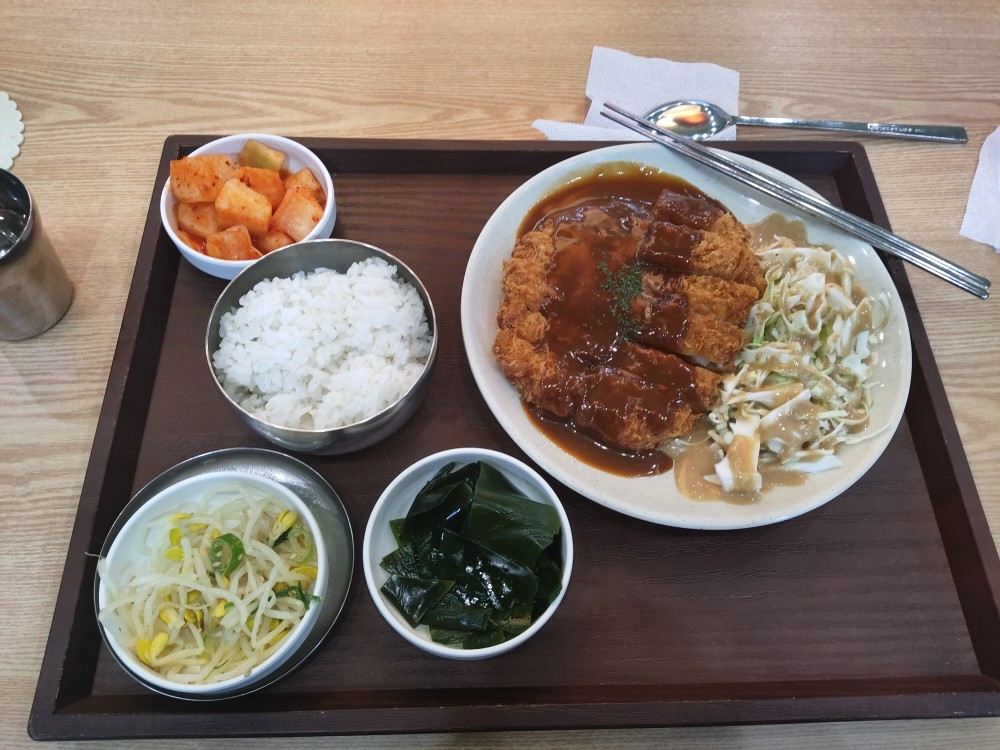
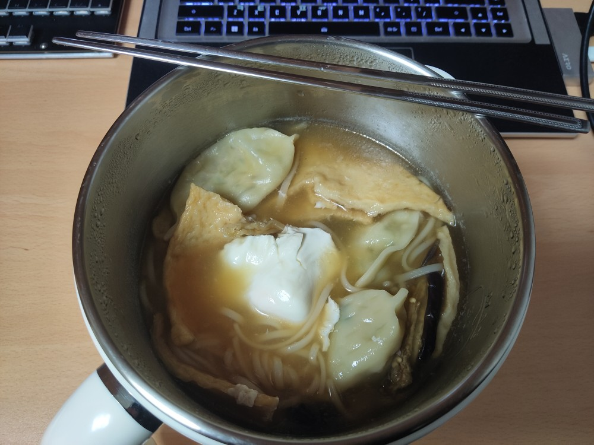
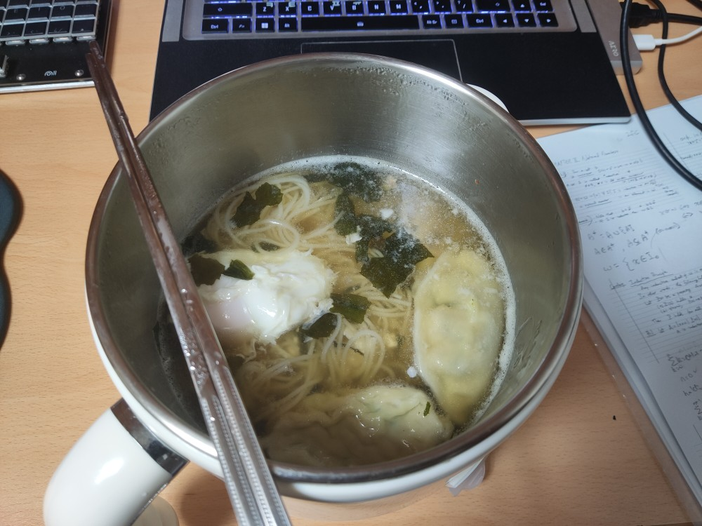
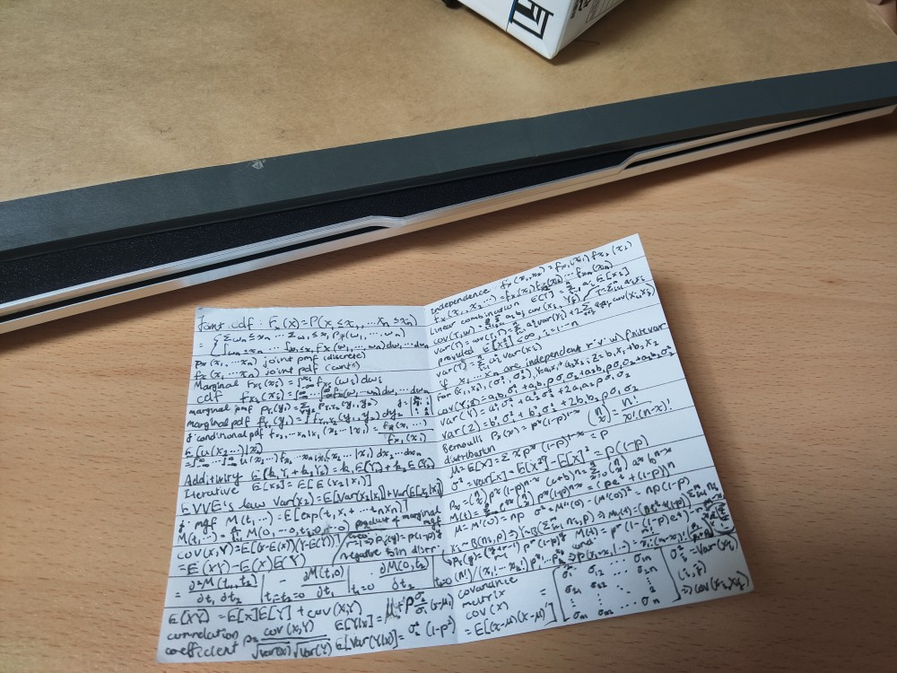

This week's highlight - Lotus Lantern festival. Let's ignore the mid-term exams for now (；w；)
Participated in the Lotus lantern festival! Saw the Yonsei Bhuddist club group just in time for the walk between Dongguk uni to dongdaemun.
    Also participated in the Yonsei timelapse video, hopefully I can add that video in the future.
  Notes allowed for statistics units. Good professors, nice buildings, many TA's and resources for the Economics and buisness units. No wonder why Yonsei is famous for those subjects. The pure maths units on the other hand ... let's just say it's different.